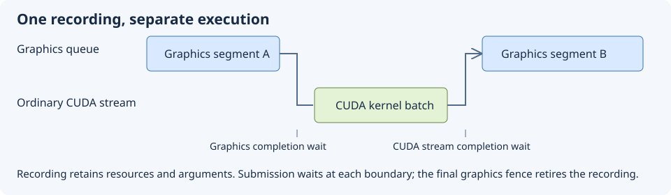

Executable examples and capability admission
Typed compute operands and CUDA interoperability
Implement your own typed Dispatch, describe resource dependencies, and compose CUDA sources or runtime calls with explicit execution and lifetime.
How to use these examples
Learn to select a resource, admit the exact feature it needs and order its GPU use. First read resource ownership and data layout, command recording and synchronization, and backend initialization.
The mental model is allocation → view/binding → recorded use → submission → completion → reuse. A capability admits an operation; it does not establish a resource's state, memory residency or queue ownership. Creation can still fail for invalid descriptors or exhausted memory.

Short snippets are literal excerpts from compiled GoogleTest workloads. They use ASSERT_TRUE/EXPECT_EQ to make failures visible. Adapt those checks to your application's status handling. Variables and helpers are initialized in each linked complete example; snippets are not separate standalone programs. The complete examples show allocation, binding, execution, readback assertions and cleanup.
cmake --build build --config Debug --target ArdaBackendTests
ctest --test-dir build -C Debug -R ArdaBackend --output-on-failureUse the platform's actual executable directory for direct --gtest_filter runs. Shader artifacts and fixtures are deployed by the test build. Missing validation skips dependent GPU tests; see validation setup and failure diagnosis. A capability skip is not evidence that the skipped operation ran.
Separate host execution, dependencies and device code
Learn to implement an operand that owns its CPU logic, launch policy and GPU work; describe resource dependencies in typed parameters; and choose immediate or deferred execution with explicit lifetime and ordering. Prerequisites: shader parameters and compilation, RHI recording and submission, and resource allocation.
A compute operand is a C++ object with a typed entry point. Its author may call several CUDA kernels, a native library, graphics compute, or a mixture. Source organization and tuning are ordinary implementation decisions. A parameter struct supplies host values and declares which resources are read or written. A command list, when used, describes work whose GPU execution happens after recording.
The CPU parameter object and the GPU kernel argument layout serve different purposes. Host shape vectors can guide tiling; resource declarations expose dependencies; dispatch then constructs the exact arguments required by each chosen kernel. No reflection layer can infer hidden pointer dependencies or a library's private tensor layout.
Derive a typed operand and own its implementation
Derive TArdaComputeOperand with your parameter type. Implement FArdaComputeOperand::GetOperandSupport for the device/runtime you retain in your constructor, plus GetName for diagnostics. Override Dispatch for immediate execution and/or DispatchDeferred for command recording. The non-template FArdaComputeOperand exposes identity, support and metadata; callers use the typed base to dispatch.
Dispatch is virtual C++ code: it can validate inputs, prepare scratch storage, invoke precompiled CUDA functions from any number of translation units, call runtime libraries, or record an RHI sequence. The base owns no device, compiler, kernel registry, variant selector or fallback policy. A support query returns a status with a reason and performs no launches. Each dispatch implementation must enforce support and validate the actual shape, dtype, layout, ranges, queue and resource compatibility it requires.
The compiled add example below binds its own RHI device and optional graphics implementation in the constructor. Its public parameters describe two buffer views, count and optional shapes. The separate host implementation below owns all selection and launch logic; the two CUDA files contain device logic.
Read compiled example: ArdaTestComputeOperand.h
#pragma once
#include "Compute/ArdaComputeOperand.h"
#include "Compute/ArdaCudaModule.h"
namespace arda
{
const char* GetArdaTestAddPtx();
ARDA_BEGIN_COMPUTE_PARAMETER_STRUCT(FArdaAddParameters)
ARDA_COMPUTE_BUFFER(mInput, EArdaComputeAccess::Read)
ARDA_COMPUTE_BUFFER(mOutput, EArdaComputeAccess::ReadWrite)
ARDA_COMPUTE_PARAMETER(uint32_t, mCount)
ARDA_COMPUTE_PARAMETER(eastl::vector<uint64_t>, mInputShape)
ARDA_COMPUTE_PARAMETER(eastl::vector<uint64_t>, mOutputShape)
ARDA_END_COMPUTE_PARAMETER_STRUCT()
// Application-specific hook, not part of the operand base or a variant registry.
using FArdaAddShaderDispatch = eastl::function<FArdaRHIStatus(IArdaRHICommandList&, const FArdaAddParameters&)>;
// A compiled example: all host policy lives in its dispatch implementation.
// The sample is caller-serialized because it retains diagnostic/tuning state.
class FArdaAddOperand final : public TArdaComputeOperand<FArdaAddParameters>
{
public:
explicit FArdaAddOperand(FArdaRHIDeviceRef Device, FArdaAddShaderDispatch Graphics = {},
eastl::vector<eastl::shared_ptr<const FArdaCudaModule>> Modules = {});
const char* GetName() const noexcept override { return "sample.add_twice"; }
FArdaRHIStatus GetOperandSupport() const override;
// This sample submits to its owned graphics queue and returns before GPU completion.
// mLastSubmission identifies that queue submission; the caller can wait/read back later.
FArdaRHIStatus Dispatch(const FArdaAddParameters& Parameters) override;
FArdaRHIStatus DispatchDeferred(IArdaRHICommandList& Commands, const FArdaAddParameters& Parameters) override;
bool mbPreferGraphics = false;
uint32_t mLastBlockSize = 0;
uint64_t mLastSubmission = 0;
eastl::string mLastImplementation;
private:
FArdaRHIDeviceRef mDevice;
FArdaAddShaderDispatch mGraphics;
eastl::vector<eastl::shared_ptr<const FArdaCudaModule>> mModules;
};
}
Declare dependencies without defining a kernel ABI
Use ARDA_BEGIN_COMPUTE_PARAMETER_STRUCT and its matching end macro as in the example. Value members contain ordinary host data; buffer and texture members retain RHI resources and ranges with author-declared Read, Write or ReadWrite access. Nested parameter structs and fixed arrays are recursively inspectable. Use a typedef for a comma-containing C++ type passed to a macro.
FArdaComputeParameterMetadata::Enumerate visits leaves in declaration order, with dotted paths and indices for arrays with multiple elements. FArdaComputeParameterMetadata::GetResourceAccesses returns retained dependency declarations, preserving aliases, distinct byte/subresource ranges and null optional fields. Failure preserves the caller’s previous output. A Read input and a ReadWrite output may reference the same buffer; their declarations stay separate for a future graph adapter to resolve.
GetStaticMetadata describes standard-layout C++ objects, including normally copied nontrivial values such as the example's shape vectors. Copy the parameter object using its C++ copy semantics; never memcpy it as a serialized packet. Enumerate borrows leaf addresses, which become invalid when the instance dies. GetResourceAccesses retains resources independently of that instance, but does not retain arbitrary host pointers hidden in value fields.
This is the foundation for future RDG dependency tracking. No automatic RDG pass registration, graph-handle resolution, dependency merging, state transitions or kernel marshaling is implemented. Declare every external resource explicitly. Null may mean unused optional input; dispatch decides whether a field is required and validates its actual range, device and sharing. Metadata layout validation cannot prove that a user kernel respects the declared range.
FArdaAddParameters Params;
// Populate Params as in the complete dispatch example below.
eastl::vector<FArdaComputeResourceAccess> Dependencies;
auto Status = Params.GetStaticMetadata().GetResourceAccesses(&Params, Dependencies);
// A future graph adapter can import these declarations; this call schedules nothing.Choose immediate execution or deferred recording
TArdaComputeOperand::Dispatch runs the author’s CPU implementation now. It may directly launch CUDA or native library work in an author-owned context/stream. Success need not mean GPU completion: the implementation must document and expose its completion mechanism, retain in-flight resources and runtime objects, and coordinate external producers and consumers.
TArdaComputeOperand::DispatchDeferred also runs CPU logic now, but appends GPU work to a caller-owned open command list. The caller closes and submits it; the override must not close/submit it or launch external GPU work outside its ordering. Borrow parameters only during the call, and retain dependencies through eventual execution. An unimplemented hook returns Unsupported. In particular the default deferred hook never calls immediate Dispatch.
For the sample, immediate Dispatch deliberately creates, records and submits its own RHI list, returning a submission ID through its own mLastSubmission field. Deferred Dispatch uses the caller's list. That shared implementation is a choice made by this operand, not a restriction of the base. The buffer test records two ordered kernels, closes/submits, waits before mapping, and verifies offset views, guard bytes and every output element:
Complete recording, submission and readback test
TEST_P(ArdaCudaGpu, OrderedKernelsShareBufferAndPreserveGuardBytes)
{
const auto C = mDevice->GetCudaCapabilities();
if (!C) GTEST_SKIP() << C.mUnavailableReason.c_str();
constexpr uint32_t Count = 1027;
eastl::vector<uint32_t> Input(Count), Output(Count + 8, 0xdeadbeefu);
for (uint32_t I = 0; I < Count; ++I) Input[I] = I * 3;
auto Src = mDevice->CreateBuffer(BufferDesc(Input.size() * 4));
auto Dst = mDevice->CreateBuffer(BufferDesc(Output.size() * 4));
ASSERT_TRUE(Src) << Src.mStatus.mMessage.c_str(); ASSERT_TRUE(Dst) << Dst.mStatus.mMessage.c_str();
EXPECT_EQ(Dst.mValue->GetCudaResourceInfo().mRepresentations, EArdaResourceRepresentations::GraphicsAndCuda);
auto Cmd = mDevice->CreateCommandList(EArdaRHIQueueType::Graphics); ASSERT_TRUE(Cmd);
ASSERT_TRUE(Cmd.mValue->Open());
ASSERT_TRUE(Cmd.mValue->WriteBuffer(*Src.mValue, Input.data(), Input.size()*4, 0));
ASSERT_TRUE(Cmd.mValue->WriteBuffer(*Dst.mValue, Output.data(), Output.size()*4, 0));
FArdaAddParameters I;
I.mCount = Count;
I.mInput.mBuffer = Src.mValue; I.mOutput.mBuffer = Dst.mValue;
I.mOutput.mRange = {16, Count * 4};
auto Dispatched = FArdaAddOperand(mDevice).DispatchDeferred(*Cmd.mValue, I);
ASSERT_TRUE(Dispatched) << Dispatched.mMessage.c_str();
eastl::vector<uint8_t> Readback;
ASSERT_TRUE(Cmd.mValue->CopyBufferDeviceToHost(*Dst.mValue, Readback));
ASSERT_TRUE(Cmd.mValue->Close());
auto Submitted = mDevice->ExecuteCommandList(Cmd.mValue); ASSERT_TRUE(Submitted) << Submitted.mStatus.mMessage.c_str();
ASSERT_TRUE(mDevice->WaitForIdle());
ASSERT_EQ(Readback.size(), Output.size()*4);
std::memcpy(Output.data(), Readback.data(), Readback.size());
for (uint32_t J = 0; J < Count; ++J) ASSERT_EQ(Output[J+4], Input[J]+18) << "element " << J;
for (uint32_t J : {0u,1u,2u,3u,Count+4,Count+5,Count+6,Count+7}) EXPECT_EQ(Output[J], 0xdeadbeefu);
if (C.mLaunchMode == EArdaCudaLaunchMode::D3D12CiG || C.mLaunchMode == EArdaCudaLaunchMode::ContextSwitch)
EXPECT_FALSE(mDevice->ExecuteCommandList(Cmd.mValue));
}Test fixture, allocation helper and source loader
class FCudaDiagnostics : public IArdaDiagnosticCallback
{
public:
std::atomic<uint32_t> mErrors{0};
void Message(EArdaDiagnosticSeverity Severity, const char* Message) override
{
if (Severity == EArdaDiagnosticSeverity::Error || Severity == EArdaDiagnosticSeverity::Fatal)
{ ++mErrors; std::fprintf(stderr, "CUDA test validation: %s\n", Message); }
}
};
class ArdaCudaGpu : public testing::TestWithParam<const char*>
{
protected:
FCudaDiagnostics mDiagnostics;
FArdaRHIDeviceRef mDevice;
void SetUp() override
{
ShutdownBackend();
FArdaBackendConfiguration C;
C.mBackendName = GetParam();
if (C.mBackendName == "d3d12-context" || C.mBackendName == "vulkan-context")
{
C.mBackendName = C.mBackendName == "d3d12-context" ? "native-d3d12" : "native-vulkan";
C.mCudaExecutionMode = EArdaCudaExecutionMode::ContextSwitch;
}
else if (C.mBackendName == "d3d12-cig")
{
C.mBackendName = "native-d3d12";
C.mCudaExecutionMode = EArdaCudaExecutionMode::GraphicsQueue;
}
if (!FindBackendModule(C.mBackendName.c_str())) GTEST_SKIP() << "Backend not built";
C.mbEnableValidation = true;
C.mMessageCallback = &mDiagnostics;
C.mShaderCompilationMode = EArdaShaderCompilationMode::LoadOnly;
ASSERT_TRUE(ConfigureBackend(C));
ARDA_REQUIRE_BACKEND() << GetBackendError().c_str();
mDevice = GetDevice();
}
void TearDown() override
{
if (mDevice) EXPECT_TRUE(mDevice->WaitForIdle());
mDevice.Reset(); ShutdownBackend();
if (GetBackendInitializeResult() != EArdaInitializeResult::ValidationUnavailable)
EXPECT_EQ(mDiagnostics.mErrors.load(), 0u);
}
FArdaRHIBufferDesc BufferDesc(uint64_t Size, bool Cuda = true)
{
FArdaRHIBufferDesc D;
D.mByteSize = Size; D.mbCudaInterop = Cuda;
D.mUsage = EArdaRHIBufferUsage::UnorderedAccess | EArdaRHIBufferUsage::ShaderResource;
return D;
}
};
eastl::string ReadArdaCudaOperandSource(const char* Name)
{
const auto Path = std::filesystem::path(ARDA_BACKEND_TEST_SHADER_SOURCE_DIR) / Name;
std::ifstream File(Path, std::ios::binary);
EXPECT_TRUE(File.is_open());
const std::string Text{std::istreambuf_iterator<char>(File), std::istreambuf_iterator<char>()};
return {Text.data(), Text.size()};
}Keep arbitrary CUDA source files behind Dispatch
The operand interface imposes no count or organization on .cpp, .cu or .cuh files. A build can compile/link CUDA translation units normally and expose host functions that Dispatch calls. No source-registration callback or framework kernel-selector function is needed. TensorRT engines or exported PyTorch kernel sequences can eventually use the same typed interface through implementation-owned runtime adapters; those integrations are not supplied here.
For optional runtime compilation, FArdaCudaModule owns one immutable source unit, named includes and compiler options, caching successful PTX per SM. Load as many units as your implementation needs, or supply precompiled PTX. This utility is independent of the operand base. Recreate a module when source, includes or compiler policy changes; failed compilations are not cached.
The sample uses ArdaCudaOperand.cu plus ArdaCudaOperandFinish.cu, with a .cuh → .h include chain. Its host dispatch chooses block size and explicitly sequences the two exported kernels. This sample expects two modules because its operation has two stages; other operands may have any count. The NVRTC helper compiles each source separately; it does not device-link cross-unit symbols. Keep each unit self-contained, link ahead of time, or provide a custom compiler/linker adapter for cross-unit device calls.
Link the optional Ardashir::ArdaCudaCompiler target and configure ARDASHIR_NVRTC_INCLUDE_DIR. CreateArdaNvrtcCompiler takes an absolute runtime library path; deploy NVRTC and its matching builtins on the launching process's library search path (PATH on Windows). The adapter targets compute_<SM>, preserves diagnostics and expects exported extern "C" kernels. No SDK types or mandatory NVRTC linkage enter the core interface. Precompiled/native library implementations need no NVRTC helper.
Read compiled example: ArdaTestComputeOperand.cpp
#include "ArdaTestComputeOperand.h"
namespace arda
{
namespace
{
const char* AddPtx = R"ptx(.version 8.0
.target sm_70
.address_size 64
.visible .entry add_values(.param .u64 src, .param .u64 dst, .param .u32 count, .param .u32 bias)
{
.reg .pred p; .reg .b32 r<6>; .reg .b64 a<5>;
ld.param.u64 a0,[src]; ld.param.u64 a1,[dst]; ld.param.u32 r0,[count]; ld.param.u32 r1,[bias];
mov.u32 r2,%ctaid.x; mov.u32 r3,%ntid.x; mov.u32 r4,%tid.x;
mad.lo.u32 r2,r2,r3,r4; setp.ge.u32 p,r2,r0; @p bra done;
mul.wide.u32 a2,r2,4; add.u64 a3,a0,a2; add.u64 a4,a1,a2;
ld.global.u32 r5,[a3]; add.u32 r5,r5,r1; st.global.u32 [a4],r5;
done: ret;
})ptx";
FArdaRHIStatus ValidateAddParameters(const FArdaAddParameters& P)
{
if (!P.mCount || !P.mInput.mBuffer || !P.mOutput.mBuffer)
return FArdaRHIStatus::Error(EArdaRHIResult::InvalidArgument, "Add requires buffers and a nonzero count.");
for (const auto* View : {&P.mInput, &P.mOutput})
{
const uint64_t Size = View->mBuffer->GetDesc().mByteSize;
const auto& R = View->mRange;
if (R.mByteOffset >= Size || R.mByteOffset % 4 ||
(R.mByteSize != ArdaRHIWholeBuffer && (!R.mByteSize || R.mByteSize > Size - R.mByteOffset)) ||
R.Resolve(View->mBuffer->GetDesc()).mByteSize != uint64_t(P.mCount) * 4)
return FArdaRHIStatus::Error(EArdaRHIResult::InvalidArgument, "Add requires one uint32 per element in each aligned view.");
}
if (!P.mInputShape.empty() || !P.mOutputShape.empty())
{
if (P.mInputShape.size() != 2 || P.mInputShape != P.mOutputShape ||
!P.mInputShape[0] || !P.mInputShape[1] || P.mInputShape[0] > UINT32_MAX / P.mInputShape[1] ||
P.mInputShape[0] * P.mInputShape[1] != P.mCount)
return FArdaRHIStatus::Error(EArdaRHIResult::InvalidArgument, "Add requires matching rank-two shapes consistent with count.");
}
return {};
}
}
const char* GetArdaTestAddPtx() { return AddPtx; }
FArdaAddOperand::FArdaAddOperand(FArdaRHIDeviceRef Device, FArdaAddShaderDispatch Graphics,
eastl::vector<eastl::shared_ptr<const FArdaCudaModule>> Modules)
: mDevice(eastl::move(Device)), mGraphics(eastl::move(Graphics)), mModules(eastl::move(Modules)) {}
FArdaRHIStatus FArdaAddOperand::GetOperandSupport() const
{
if (!mDevice) return FArdaRHIStatus::Error(EArdaRHIResult::InvalidArgument, "Add has no device.");
const auto C = mDevice->GetCudaCapabilities();
if ((mGraphics && mbPreferGraphics) || (C && C.mComputeCapability >= 70) || mGraphics) return {};
return FArdaRHIStatus::Error(EArdaRHIResult::Unsupported, "Add needs CUDA SM 70+ or its supplied graphics implementation.");
}
FArdaRHIStatus FArdaAddOperand::Dispatch(const FArdaAddParameters& P)
{
mLastSubmission = 0;
if (auto S = GetOperandSupport(); !S) return S;
if (auto S = ValidateAddParameters(P); !S) return S;
auto Commands = mDevice->CreateCommandList(EArdaRHIQueueType::Graphics);
if (!Commands) return Commands.mStatus;
if (auto S = Commands.mValue->Open(); !S) return S;
if (auto S = DispatchDeferred(*Commands.mValue, P); !S) return S;
if (auto S = Commands.mValue->Close(); !S) return S;
auto Submitted = mDevice->ExecuteCommandList(Commands.mValue);
if (!Submitted) return Submitted.mStatus;
mLastSubmission = Submitted.mValue;
return {};
}
FArdaRHIStatus FArdaAddOperand::DispatchDeferred(IArdaRHICommandList& Commands, const FArdaAddParameters& P)
{
mLastImplementation.clear();
mLastBlockSize = 0;
if (auto S = GetOperandSupport(); !S) return S;
if (auto S = ValidateAddParameters(P); !S) return S;
if (Commands.GetDevice() != mDevice.Get())
return FArdaRHIStatus::Error(EArdaRHIResult::WrongDevice, "Add command list belongs to another device.");
if (Commands.GetQueueType() == EArdaRHIQueueType::Copy)
return FArdaRHIStatus::Error(EArdaRHIResult::Unsupported, "Add cannot execute on a copy queue.");
// Support, shape policy, tiling and fallback are normal user C++ code here.
const auto C = mDevice->GetCudaCapabilities();
const bool CanUseCuda = C && C.mComputeCapability >= 70 &&
(C.mLaunchMode != EArdaCudaLaunchMode::D3D12CiG || Commands.GetQueueType() == EArdaRHIQueueType::Graphics) &&
P.mInput.mBuffer->GetCudaResourceInfo().mbSharingEnabled && P.mOutput.mBuffer->GetCudaResourceInfo().mbSharingEnabled;
if (mbPreferGraphics || !CanUseCuda)
{
if (!mGraphics) return FArdaRHIStatus::Error(EArdaRHIResult::Unsupported, "Add has no compatible graphics implementation.");
auto Status = mGraphics(Commands, P);
if (Status) mLastImplementation = "graphics.add";
return Status;
}
const uint32_t Block = !P.mInputShape.empty() && P.mInputShape[1] <= 64 ? 32 : 128;
FArdaCudaKernel First;
First.mPtx = AddPtx;
First.mEntryPoint = "add_values";
First.mBlockSize[0] = Block;
First.mGridSize[0] = 1 + (P.mCount - 1) / Block;
First.mArguments = {FArdaCudaArgument::Binding(0), FArdaCudaArgument::Binding(1),
FArdaCudaArgument::Value(P.mCount), FArdaCudaArgument::Value(7u)};
auto Second = First;
Second.mArguments[0] = FArdaCudaArgument::Binding(1);
Second.mArguments[3] = FArdaCudaArgument::Value(11u);
if (!mModules.empty())
{
// Optional runtime compilation, not a restriction of the operand interface.
if (mModules.size() != 2 || !mModules[0] || !mModules[1])
return FArdaRHIStatus::Error(EArdaRHIResult::InvalidArgument, "This sample expects two source modules.");
auto A = mModules[0]->GetPtx(C.mComputeCapability);
if (!A) return A.mStatus;
auto B = mModules[1]->GetPtx(C.mComputeCapability);
if (!B) return B.mStatus;
First.mPtx = eastl::move(A.mValue);
Second.mPtx = eastl::move(B.mValue);
Second.mEntryPoint = "finish_values";
}
eastl::vector<FArdaComputeResourceAccess> Accesses;
if (auto S = GetParameterMetadata().GetResourceAccesses(&P, Accesses); !S) return S;
FArdaCudaDispatch Work;
for (const auto& A : Accesses) Work.mBindings.push_back({A.mResource, A.mAccess, A.mBufferRange});
Work.mKernels = {eastl::move(First), eastl::move(Second)};
// The RHI validates/records this sequence; it retains submitted dependencies.
// A library-backed implementation can use its own direct Dispatch instead.
auto Status = Commands.DispatchCuda(Work);
if (Status) { mLastBlockSize = Block; mLastImplementation = "cuda.sequence"; }
return Status;
}
}
Read compiled example: ArdaCudaOperand.cu
// First translation unit; dispatch owns the sequence and dimension-specific launch policy.
#include "ArdaCudaOperandValue.h"
extern "C" __global__ void add_values(const unsigned int* Input, unsigned int* Output,
unsigned int Count, unsigned int Bias)
{
const unsigned int Index = blockIdx.x * blockDim.x + threadIdx.x;
if (Index < Count)
{
Output[Index] = AddArdaOperandValue(Input[Index], Bias);
}
}
Read compiled example: ArdaCudaOperandFinish.cu
// Independent translation unit, joined with the first by the user's C++ dispatch.
#include "ArdaCudaOperandMath.cuh"
extern "C" __global__ void finish_values(const unsigned int* Input, unsigned int* Output,
unsigned int Count, unsigned int Bias)
{
const unsigned int Index = blockIdx.x * blockDim.x + threadIdx.x;
if (Index < Count) Output[Index] = FinishArdaOperandValue(Input[Index], Bias);
}
Read compiled example: ArdaCudaOperandMath.cuh
#pragma once
#include "ArdaCudaOperandValue.h"
__device__ inline unsigned int FinishArdaOperandValue(unsigned int Value, unsigned int Bias)
{
return AddArdaOperandValue(Value, Bias);
}
Read compiled example: ArdaCudaOperandValue.h
#pragma once
#if defined(__CUDACC__)
__device__ inline unsigned int AddArdaOperandValue(unsigned int Value, unsigned int Bias)
{
return Value + Bias;
}
#endif
Make shape and policy decisions inside dispatch
The sample's DispatchDeferred checks architecture, queue and sharing, then selects a graphics path or its CUDA sequence using ordinary if statements. It chooses a 32-thread block for shapes whose last axis is at most 64, otherwise 128. Two inputs can have the same element count while preferring different tiling. Shapes are host values: they do not imply tensor layout, strides, allocation size or dtype.
For an operation with tuned algorithms, keep caches and profiling policy in its implementation. Key reusable choices by relevant shape, dtype, layout, architecture and runtime state. Benchmark with scratch resources or otherwise preserve operation semantics; trying candidates on live output can duplicate writes. Synchronize mutable caches and scratch storage if dispatch is concurrent. The sample's mutable diagnostic fields require caller serialization.
The test holds count at 128, changes shapes from [4, 32] to [1, 128], observes block size 32 then 128, and checks input + 18 each time. The two source modules compile only once each. It then calls the typed virtual immediate hook on the output in place, waits for its submission, and checks input + 36:
Multi-file compilation, shape policy and immediate dispatch test
TEST_P(ArdaCudaGpu, TypedDispatchOwnsPolicyAndMultipleCudaSourceModules)
{
const auto Capabilities = mDevice->GetCudaCapabilities();
if (!Capabilities) GTEST_SKIP() << Capabilities.mUnavailableReason.c_str();
const char* LibraryPath = std::getenv("ARDA_TEST_NVRTC_LIBRARY");
if (!LibraryPath) GTEST_SKIP() << "Set ARDA_TEST_NVRTC_LIBRARY to exercise CUDA C++ compilation.";
auto Compiler = CreateArdaNvrtcCompiler(LibraryPath);
ASSERT_TRUE(Compiler) << Compiler.mStatus.mMessage.c_str();
uint32_t Compilations = 0;
eastl::vector<eastl::shared_ptr<const FArdaCudaModule>> Modules;
for (const char* Name : {"ArdaCudaOperand.cu", "ArdaCudaOperandFinish.cu"})
{
auto Module = FArdaCudaModule::Create({Name, ReadArdaCudaOperandSource(Name), EArdaCudaSourceLanguage::CudaCpp,
{{"ArdaCudaOperandValue.h", ReadArdaCudaOperandSource("ArdaCudaOperandValue.h")},
{"ArdaCudaOperandMath.cuh", ReadArdaCudaOperandSource("ArdaCudaOperandMath.cuh")}}, {"--std=c++17"}},
[&, Compile = Compiler.mValue](const auto& Source, uint32_t Architecture)
{ ++Compilations; return Compile(Source, Architecture); });
ASSERT_TRUE(Module);
Modules.push_back(Module.mValue);
}
FArdaAddOperand Operand(mDevice, {}, Modules);
ASSERT_TRUE(Operand.GetOperandSupport());
auto Source = mDevice->CreateBuffer(BufferDesc(128 * 4));
auto Output = mDevice->CreateBuffer(BufferDesc(128 * 4));
ASSERT_TRUE(Source); ASSERT_TRUE(Output);
FArdaAddParameters P;
P.mCount = 128; P.mInput.mBuffer = Source.mValue; P.mOutput.mBuffer = Output.mValue;
for (const uint64_t Columns : {32u, 128u})
{
auto Commands = mDevice->CreateCommandList(EArdaRHIQueueType::Graphics);
ASSERT_TRUE(Commands); ASSERT_TRUE(Commands.mValue->Open());
eastl::vector<uint32_t> Values(128);
for (uint32_t Index = 0; Index < Values.size(); ++Index) Values[Index] = Index * 3;
ASSERT_TRUE(Commands.mValue->WriteBuffer(*Source.mValue, Values.data(), Values.size() * 4));
P.mInputShape = P.mOutputShape = {128 / Columns, Columns};
const auto Status = Operand.DispatchDeferred(*Commands.mValue, P);
ASSERT_TRUE(Status) << Status.mMessage.c_str();
EXPECT_EQ(Operand.mLastBlockSize, Columns == 32 ? 32u : 128u);
EXPECT_EQ(Compilations, 2u);
eastl::vector<uint8_t> Bytes;
ASSERT_TRUE(Commands.mValue->CopyBufferDeviceToHost(*Output.mValue, Bytes));
ASSERT_TRUE(Commands.mValue->Close()); ASSERT_TRUE(mDevice->ExecuteCommandList(Commands.mValue));
ASSERT_TRUE(mDevice->WaitForIdle());
ASSERT_EQ(Bytes.size(), Values.size() * 4);
for (uint32_t Index = 0; Index < Values.size(); ++Index)
{ uint32_t Value = 0; std::memcpy(&Value, Bytes.data() + Index * 4, 4); ASSERT_EQ(Value, Values[Index] + 18); }
}
// The same typed virtual interface also permits an implementation to submit now.
TArdaComputeOperand<FArdaAddParameters>& Base = Operand;
P.mInput.mBuffer = Output.mValue;
ASSERT_TRUE(Base.Dispatch(P));
EXPECT_GT(Operand.mLastSubmission, 0u);
auto Read = mDevice->CreateCommandList(EArdaRHIQueueType::Graphics); ASSERT_TRUE(Read);
ASSERT_TRUE(Read.mValue->Open());
eastl::vector<uint8_t> Bytes;
ASSERT_TRUE(Read.mValue->CopyBufferDeviceToHost(*Output.mValue, Bytes));
ASSERT_TRUE(Read.mValue->Close()); ASSERT_TRUE(mDevice->ExecuteCommandList(Read.mValue));
ASSERT_EQ(Bytes.size(), 128u * 4);
for (uint32_t I = 0; I < 128; ++I)
{ uint32_t V; std::memcpy(&V, Bytes.data() + I * 4, 4); ASSERT_EQ(V, I * 3 + 36); }
}Choose alternatives before recording writes
A graphics alternative is optional user implementation code. The sample accepts an HLSL dispatch callback, checks input/resource compatibility and invokes it when sharing is unavailable or its own mbPreferGraphics setting is true. The base neither registers nor selects alternatives. GetOperandSupport can report support through a supplied graphics path even with CUDA disabled, but shape and resource checks still belong to dispatch.
Make fallback decisions before recording dependent writes. Once compilation or recording of the chosen path fails, propagate the error; retrying another path in a partially recorded list can duplicate work. The sample checks all inputs and compiles both source modules before submitting its sequence to DispatchCuda. The RHI still checks kernel launch descriptors and native constraints.
The complete graphics → operand → graphics test verifies input + 54, while nonshared resources exercise the graphics alternative. The callback owns shader transitions, bindings and compute pipeline setup:
Mixed graphics/CUDA and graphics alternative test
TEST_P(ArdaCudaGpu, GraphicsFallbackAndMixedShaderCudaSequence)
{
const auto Path = std::filesystem::path(ARDA_BACKEND_TEST_SHADER_DIR) /
(std::string("ArdaCudaFallback") + GetShaderArtifactExtension(GetBackendConfiguration().mBackendName.c_str()));
std::ifstream File(Path, std::ios::binary | std::ios::ate);
ASSERT_TRUE(File);
eastl::vector<uint8_t> Bytes(static_cast<size_t>(File.tellg()));
File.seekg(0); File.read(reinterpret_cast<char*>(Bytes.data()), Bytes.size());
FArdaRHIShaderDesc SD;
SD.mStage = EArdaRHIShaderStage::Compute; SD.mEntryPoint = "AddFallbackCS";
SD.mBytecode = Bytes.data(); SD.mBytecodeSize = Bytes.size();
auto Shader = mDevice->CreateShader(SD); ASSERT_TRUE(Shader);
FArdaRHIBindingLayoutDesc LD;
LD.mVisibility = EArdaRHIShaderStage::Compute;
LD.mItems = {{0, 1, EArdaRHIBindingType::StructuredBufferSRV}, {0, 1, EArdaRHIBindingType::StructuredBufferUAV}};
auto Layout = mDevice->CreateBindingLayout(LD); ASSERT_TRUE(Layout);
FArdaRHIComputePipelineDesc PD;
PD.mComputeShader = Shader.mValue; PD.mBindingLayouts = {Layout.mValue};
auto Pipeline = mDevice->CreateComputePipeline(PD); ASSERT_TRUE(Pipeline);
FArdaAddOperand Operand(mDevice, [&](IArdaRHICommandList& Commands, const FArdaAddParameters& I)
{
FArdaRHIBindingSetDesc BD; BD.mLayout = Layout.mValue;
for (uint32_t J = 0; J < 2; ++J)
{
auto* Buffer = (J ? I.mOutput.mBuffer.Get() : I.mInput.mBuffer.Get());
if (auto S = Commands.SetBufferState(*Buffer, J ? EArdaRHIResourceState::UnorderedAccess :
EArdaRHIResourceState::ShaderResource); !S) return S;
FArdaRHIBindingItem Item;
Item.mType = J ? EArdaRHIBindingType::StructuredBufferUAV : EArdaRHIBindingType::StructuredBufferSRV;
Item.mResource = J ? I.mOutput.mBuffer : I.mInput.mBuffer;
Item.mView.mBufferRange = J ? I.mOutput.mRange : I.mInput.mRange;
BD.mItems.push_back(Item);
}
auto Set = mDevice->CreateBindingSet(BD); if (!Set) return Set.mStatus;
FArdaRHIComputeState State; State.mPipeline = Pipeline.mValue; State.mBindings = {Set.mValue};
if (auto S = Commands.SetComputeState(State); !S) return S;
Commands.Dispatch((I.mCount + 127) / 128, 1, 1);
return FArdaRHIStatus{};
});
for (bool Share : {false, true})
{
if (Share && !mDevice->GetCudaCapabilities()) continue;
constexpr uint32_t Count = 259;
auto D = BufferDesc(Count * 4, Share);
D.mStructureStride = 4; D.mUsage |= EArdaRHIBufferUsage::Structured;
auto A = mDevice->CreateBuffer(D), B = mDevice->CreateBuffer(D); ASSERT_TRUE(A); ASSERT_TRUE(B);
eastl::vector<uint32_t> Values(Count);
for (uint32_t J = 0; J < Count; ++J) Values[J] = J * 5;
auto Cmd = mDevice->CreateCommandList(EArdaRHIQueueType::Graphics); ASSERT_TRUE(Cmd); ASSERT_TRUE(Cmd.mValue->Open());
ASSERT_TRUE(Cmd.mValue->WriteBuffer(*A.mValue, Values.data(), D.mByteSize, 0));
FArdaAddParameters I; I.mCount = Count; I.mInput.mBuffer = A.mValue; I.mOutput.mBuffer = B.mValue;
Operand.mbPreferGraphics = true;
auto First = Operand.DispatchDeferred(*Cmd.mValue, I);
ASSERT_TRUE(First) << First.mMessage.c_str(); EXPECT_EQ(Operand.mLastImplementation, "graphics.add");
I.mInput.mBuffer = B.mValue; I.mOutput.mBuffer = A.mValue;
Operand.mbPreferGraphics = false;
auto Middle = Operand.DispatchDeferred(*Cmd.mValue, I);
ASSERT_TRUE(Middle) << Middle.mMessage.c_str();
EXPECT_EQ(Operand.mLastImplementation, Share ? "cuda.sequence" : "graphics.add");
I.mInput.mBuffer = A.mValue; I.mOutput.mBuffer = B.mValue;
Operand.mbPreferGraphics = true;
ASSERT_TRUE(Operand.DispatchDeferred(*Cmd.mValue, I));
eastl::vector<uint8_t> Result;
ASSERT_TRUE(Cmd.mValue->CopyBufferDeviceToHost(*B.mValue, Result));
ASSERT_TRUE(Cmd.mValue->Close()); ASSERT_TRUE(mDevice->ExecuteCommandList(Cmd.mValue));
ASSERT_EQ(Result.size(), D.mByteSize);
for (uint32_t J = 0; J < Count; ++J)
{
uint32_t Value; std::memcpy(&Value, Result.data() + J*4, 4);
ASSERT_EQ(Value, Values[J] + 54) << J;
}
}
}Read compiled example: ArdaCudaFallback.hlsl
StructuredBuffer<uint> Input : register(t0);
RWStructuredBuffer<uint> Output : register(u0);
[numthreads(128, 1, 1)]
void AddFallbackCS(uint3 Thread : SV_DispatchThreadID)
{
uint Count, Stride;
Output.GetDimensions(Count, Stride);
if (Thread.x < Count) Output[Thread.x] = Input[Thread.x] + 18;
}
Enable backend CUDA independently of the interface
The typed base, metadata and host-only dispatch work without CUDA. Enable backend CUDA sharing/DispatchCuda using the options below. Ordinary-context execution accepts CUDA 12.0+ headers; D3D12 CiG capture requires CUDA 13.3+. Native Vulkan launch uses Vulkan extension declarations. Runtime support is probed independently of the headers installed.
cmake -S . -B build/cuda-on -DARDASHIR_ENABLE_CUDA=ON -DARDASHIR_CUDA_INCLUDE_DIR="C:/CUDA/include"
cmake --build build/cuda-on --config Debug --target ArdaBackendTests ArdaBackendPublicHeaders
cmake -S . -B build/cuda-off -DARDASHIR_ENABLE_CUDA=OFFUse your local SDK/build paths. Public headers contain no CUDA SDK types. Native library dependencies for a custom Dispatch belong to that implementation’s build target. A successful build does not establish runtime architecture, library or sharing support.
Allocate shared storage and inspect actual representations
Query FArdaCudaCapabilities on the device, then FArdaCudaResourceInfo on each allocation. An adapter supporting CUDA does not make every graphics allocation shareable. Set mbCudaInterop at creation; an existing ordinary buffer cannot be converted by toggling metadata.
FArdaRHIBufferDesc Desc;
Desc.mByteSize = 1024;
Desc.mUsage = EArdaRHIBufferUsage::ShaderResource | EArdaRHIBufferUsage::UnorderedAccess;
Desc.mbCudaInterop = true;
auto Shared = Device->CreateBuffer(Desc);
if (!Shared) { /* inspect the status and choose an explicit allocation/implementation */ }Current providers admit dedicated nonempty device-local buffers. CPU-visible, sparse/tiled, virtual/placed, versioned and acceleration-structure storage buffers are rejected. Views retain the underlying resource. Vertex/index/instance source buffers can be shared when their allocations qualify; an opaque graphics acceleration structure is not a CUDA/OptiX traversal handle.
Qualified texture storage uses 24 raw R/RG/RGBA integer formats (8/16/32-bit channels) or floating formats (16/32-bit channels). Dimensions are 1D, 1D array, 2D, 2D array and 3D, subject to execution-mode qualification below. Normalized, sRGB, BGRA, packed, compressed, depth, cube and multisample images are rejected. Native imports cannot opt into sharing without provider-owned export/mapping lifetime.
The public RHI does not expose these resources as raw CUDA pointers or native streams. A direct library-backed Dispatch must own suitable native allocations/interop and synchronization, or gain an explicit adapter. The typed interface permits such code; it does not implement TensorRT/PyTorch memory conversion or a deferred native-library bridge.
Make image-to-tensor layout conversion explicit
Buffer bindings provide a private linear device address with view offset applied. Texture bindings provide a surface handle for one selected mip and its layers/depth. Surface access does not sample/filter, normalize, swizzle, convert sRGB or transpose tensor data. Follow the surface instruction's byte-based x addressing and the selected mip's dimensions.
A library expecting contiguous NCHW/NHWC data cannot consume tiled image storage as a flat pointer. Implement surface-to-buffer packing before the tensor operation, declare the source image Read and destination buffer Write, and order the consumer after it. Include shape, strides and dtype in host parameters and validate them in Dispatch. This makes dependencies visible and leaves layout conversion under the operator author's control.
Selected-mip surface kernel and graphics readback
TEST_P(ArdaCudaGpu, SurfaceWritesReachGraphicsReadbackAtSelectedMip)
{
const auto C = mDevice->GetCudaCapabilities();
if (!C || !C.mbSurfaceAccess) GTEST_SKIP() << C.mSurfaceUnavailableReason.c_str();
const char* Ptx = R"ptx(.version 8.0
.target sm_70
.address_size 64
.visible .entry fill_surface(.param .u64 surface, .param .u32 width, .param .u32 height)
{
.reg .pred p; .reg .b32 r<8>; .reg .b64 s;
ld.param.u64 s,[surface]; ld.param.u32 r0,[width]; ld.param.u32 r1,[height];
mov.u32 r2,%ctaid.x; mov.u32 r3,%ntid.x; mov.u32 r4,%tid.x; mad.lo.u32 r2,r2,r3,r4;
mov.u32 r3,%ctaid.y; mov.u32 r4,%ntid.y; mov.u32 r5,%tid.y; mad.lo.u32 r3,r3,r4,r5;
setp.ge.u32 p,r2,r0; @p bra done; setp.ge.u32 p,r3,r1; @p bra done;
mad.lo.u32 r6,r3,r0,r2; add.u32 r6,r6,101; shl.b32 r7,r2,2;
sust.b.2d.b32.trap [s,{r7,r3}],r6;
done: ret;
})ptx";
FArdaRHITextureDesc D;
D.mbCudaInterop = true; D.mWidth = 54; D.mHeight = 38; D.mMipLevels = 2;
D.mFormat = EArdaRHIFormat::R32UInt;
D.mUsage = EArdaRHITextureUsage::ShaderResource | EArdaRHITextureUsage::UnorderedAccess;
auto Texture = mDevice->CreateTexture(D); ASSERT_TRUE(Texture) << Texture.mStatus.mMessage.c_str();
EXPECT_EQ(Texture.mValue->GetCudaResourceInfo().mSupportedRepresentation, EArdaCudaRepresentation::Surface);
FArdaRHIStagingTextureDesc Staging;
Staging.mTexture = D; Staging.mTexture.mbCudaInterop = false; Staging.mCpuAccess = EArdaRHICpuAccess::Read;
auto Readback = mDevice->CreateStagingTexture(Staging); ASSERT_TRUE(Readback);
auto Cmd = mDevice->CreateCommandList(EArdaRHIQueueType::Graphics); ASSERT_TRUE(Cmd); ASSERT_TRUE(Cmd.mValue->Open());
FArdaCudaKernel K;
K.mPtx = Ptx; K.mEntryPoint = "fill_surface";
K.mBlockSize[0] = K.mBlockSize[1] = 8;
K.mGridSize[0] = 4; K.mGridSize[1] = 3;
K.mArguments = {FArdaCudaArgument::Binding(0), FArdaCudaArgument::Value(27u), FArdaCudaArgument::Value(19u)};
FArdaCudaBinding B; B.mResource = Texture.mValue; B.mMipLevel = 1; B.mAccess = EArdaComputeAccess::Write;
const auto Dispatched = Cmd.mValue->DispatchCuda({{B}, {K}});
ASSERT_TRUE(Dispatched) << Dispatched.mMessage.c_str();
FArdaRHITextureSlice Slice; Slice.mMipLevel = 1;
ASSERT_TRUE(Cmd.mValue->CopyTextureToStaging(*Readback.mValue, Slice, *Texture.mValue, Slice));
ASSERT_TRUE(Cmd.mValue->Close());
auto Submitted = mDevice->ExecuteCommandList(Cmd.mValue); ASSERT_TRUE(Submitted) << Submitted.mStatus.mMessage.c_str();
// The submission must retain the native image, CUDA mapping and executable.
B.mResource.Reset();
Texture.mValue.Reset(); Cmd.mValue.Reset();
ASSERT_TRUE(mDevice->WaitForIdle());
auto Mapped = mDevice->MapStagingTexture(Readback.mValue, Slice, EArdaRHICpuAccess::Read); ASSERT_TRUE(Mapped);
for (uint32_t Y = 0; Y < 19; ++Y)
{
const auto* Row = reinterpret_cast<const uint32_t*>(static_cast<const uint8_t*>(Mapped.mValue.mData) + Y * Mapped.mValue.mRowPitch);
for (uint32_t X = 0; X < 27; ++X) EXPECT_EQ(Row[X], Y*27+X+101) << X << "," << Y;
}
mDevice->UnmapStagingTexture(Readback.mValue);
}Understand when recorded GPU work executes
Set FArdaBackendConfiguration::mCudaExecutionMode before initialization. Automatic prefers native graphics-queue execution, then uses an ordinary CUDA context when native execution is unavailable or D3D12 image qualification fails. GraphicsQueue pins native execution; ContextSwitch forces separate execution on both APIs.
In ContextSwitch mode, DispatchCuda records owned CUDA segments without launching. Submission completes preceding graphics work, executes an ordinary CUDA stream to completion, then resumes graphics. It blocks the submitting CPU at each boundary, preventing graphics/CUDA overlap; the final graphics segment retains ordinary fence completion. Arguments, modules and resources survive until completion. Reset discards unsubmitted work and replaying a CUDA recording is rejected.

Vulkan fallback requires an enabled OS external-memory extension, dedicated exported memory, matching CUDA UUID and ownership release/acquire barriers. Serialize access to borrowed queues. Vulkan ContextSwitch currently rejects layered surfaces after their cross-API readback failed qualification; mbLayeredSurfaceAccess reports this. D3D12 ordinary-context mode supports all five qualified dimensions. Native Vulkan retains array support. Use a graphics allocation and explicit alternative when sharing is unavailable.
Respect native queue ordering and object lifetime
D3D12 CiG matches the adapter LUID and CUDA device, creates a queue-bound context, imports shared committed memory and captures kernels into the graphics list. UAV barriers order accesses. Submit or discard a captured list before another capture on that context; captured lists are single-use. Streams, mappings and executable modules remain retained through graphics-fence retirement.
Vulkan VK_NV_cuda_kernel_launch records directly in a graphics/compute command buffer. Buffer device addresses are valid for this path, not arbitrary CUDA runtime calls; VK_NVX_image_view_handle supplies surface handles. Memory barriers and submission retention order consumers and preserve resources/modules. Copy queues are unsupported. Sharing availability is not permission for simultaneous writes.
The CUDA driver bridge checks kernel parameter metadata where the driver exposes it. Native Vulkan has no equivalent query here; custom PTX authors must match parameter counts, sizes and layouts. Both providers validate declared ranges and launch limits, which cannot establish arbitrary kernel memory safety.
Diagnose failures and reproduce the evidence
The compiled examples run on native D3D12/Vulkan, forced context-switching paths and pinned D3D12 CiG where available. The test machine is Windows with RTX PRO 6000 Blackwell (SM 120), driver 610.62 / CUDA 13.3. D3D12 CiG surface mapping fails on this driver; automatic mode uses an ordinary context. Native Vulkan and ordinary D3D12 surface tests qualify all 24 formats × 5 dimensions, while Vulkan ContextSwitch excludes layered images. Other GPUs, older installed drivers, native-library adapters and other operating systems remain unqualified.
- Unsupported operand
- Inspect the user implementation's support status, device/runtime and chosen path. For shared RHI work, check SM, queue and each resource's representation. Select an alternative before writes.
- InvalidArgument
- Check required typed parameters, shape/count consistency, range bounds, alignment, dtype/layout and kernel ABI. Metadata is not a substitute for these checks.
- Compiler failure
- Inspect preserved diagnostics, include names and runtime/builtins deployment. Rebuild source modules after changes. Do not retry a graphics path after partial recording.
- Capture or replay failure
- Discard/reset the failed recording and obey CiG submit/discard ordering. Re-record intentional repeated work.
- Skipped GPU test
- Distinguish missing validation, unavailable CUDA and missing optional NVRTC library. A skip is not evidence of GPU execution; see validation setup.
Run ArdaBackendTests in CUDA-on and CUDA-off builds. For focused checks use the filter below, with ARDA_TEST_NVRTC_LIBRARY set to the absolute NVRTC library path and the builtins directory on PATH when the NVRTC adapter is configured. Leave that variable unset in a build without NVRTC headers; explicitly requesting compilation from an unavailable adapter is a test failure. CPU-only metadata/host dispatch tests run without that library. The GPU tests verify output values, guards, multi-file compilation caching, deferred execution, support rejection and graphics alternatives.
ArdaBackendTests --gtest_filter=ArdaCompute*:ArdaCudaModule.*:ArdaCudaCompiler.*:*ArdaCudaGpu*Checkpoints and further reading
An operand author owns execution, validation and policy. Typed metadata exposes resource dependencies without dictating a kernel ABI. Deferred recording requires an ordered submission path; immediate launches require an implementation-defined completion contract.
- Where would an immediate TensorRT enqueue and its stream ownership live?
- Why can a default deferred hook not safely call an immediate hook?
- How do aliasing views, null optional resources and shape vectors appear in metadata?
- Why do [4, 32] and [1, 128] select different blocks while producing the same values?
- What changes when a surface is unqualified or a selected compilation fails?
Use dispatch, parameters, policy and alternatives to check your answers. Continue with RDG fundamentals, shader authoring, diagnostics, and the canonical API reference.